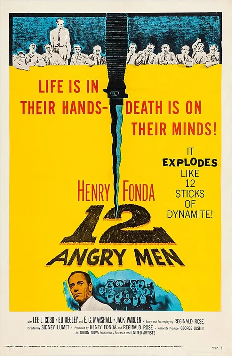
12 Angry Men
1957 · Sidney Lumet
THE COLLECTION / 129 FILMS
Browse all films. Search by title, director, genre or decade.

Films released before 1970.
↗02 / COLLECTIONFrom the BFI 2022 critics’ poll.
↗03 / COLLECTIONBrowse crime films.
↗129 films in the archive

1957 · Sidney Lumet

1968 · Stanley Kubrick
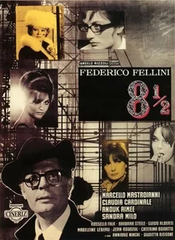
1963 · Federico Fellini
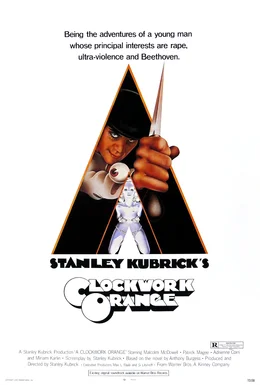
1971 · Stanley Kubrick
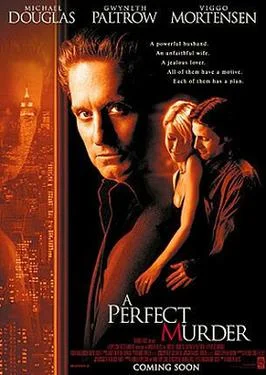
1998 · Andrew Davis

1993 · Clint Eastwood
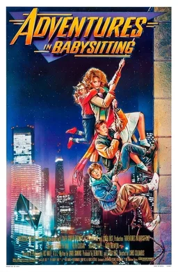
1987 · Chris Columbus
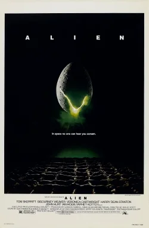
1979 · Ridley Scott
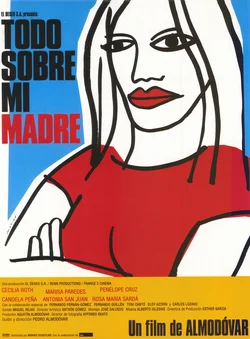
1999 · Pedro Almodóvar

1973 · Federico Fellini
1999 · Sam Mendes

1977 · Woody Allen

1979 · Francis Ford Coppola
1978 · Ingmar Bergman
2009 · James Cameron
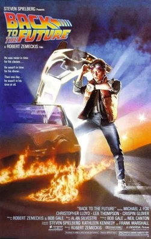
1985 · Robert Zemeckis

1975 · Stanley Kubrick
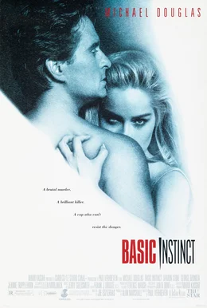
1992 · Paul Verhoeven
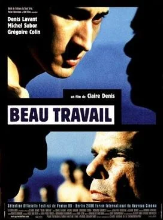
1999 · Claire Denis
1988 · Penny Marshall
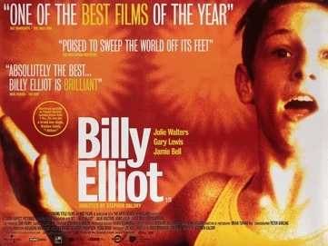
2000 · Stephen Daldry

1947 · Michael Powell and Emeric Pressburger

1982 · Ridley Scott
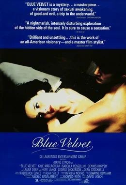
1986 · David Lynch
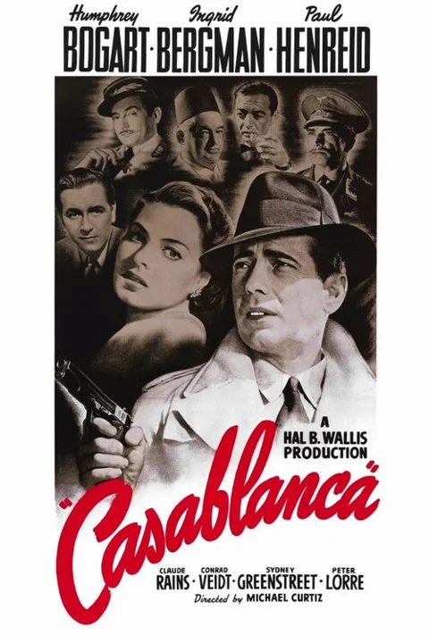
1942 · Michael Curtiz
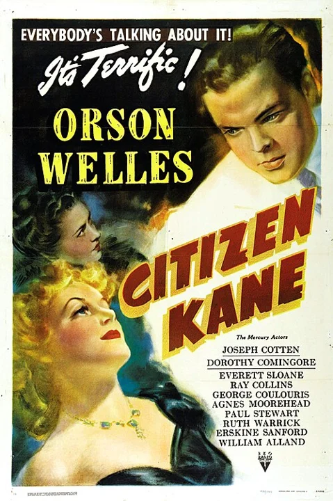
1941 · Orson Welles

1962 · Agnès Varda

1989 · Woody Allen
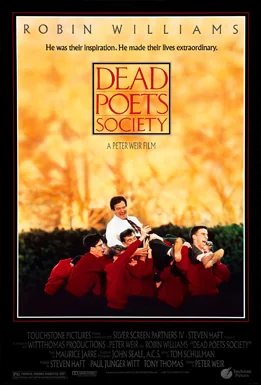
1989 · Peter Weir

1997 · Woody Allen

1954 · Alfred Hitchcock
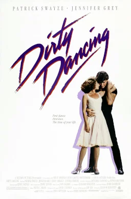
1987 · Emile Ardolino
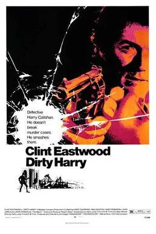
1971 · Don Siegel
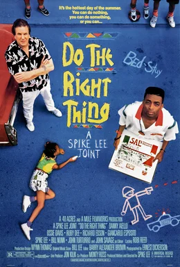
1989 · Spike Lee
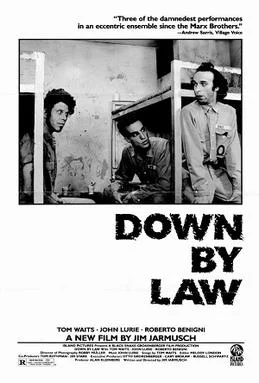
1986 · Jim Jarmusch

1982 · Steven Spielberg

1987 · Adrian Lyne
1983 · Adrian Lyne
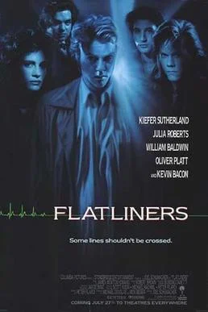
1990 · Joel Schumacher
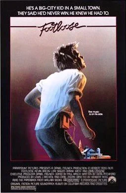
1984 · Herbert Ross

1994 · Robert Zemeckis

1990 · Jerry Zucker

2000 · Ridley Scott
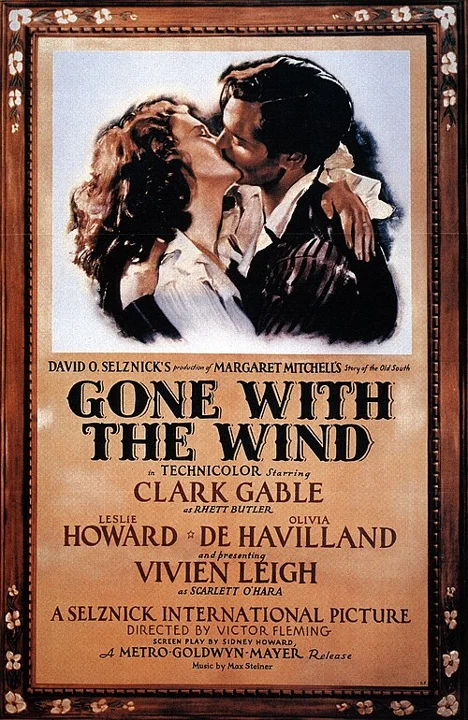
1939 · Victor Fleming
1959 · Yasujiro Ozu
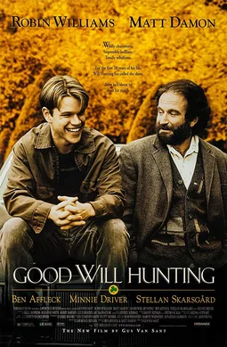
1997 · Gus Van Sant

1990 · Martin Scorsese
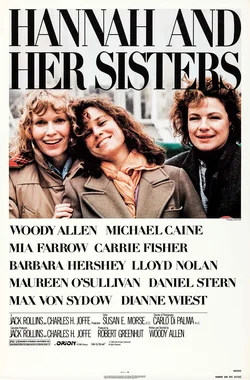
1986 · Woody Allen
1963 · Akira Kurosawa
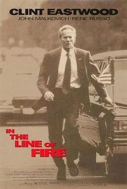
1993 · Wolfgang Petersen
2000 · Wong Kar Wai
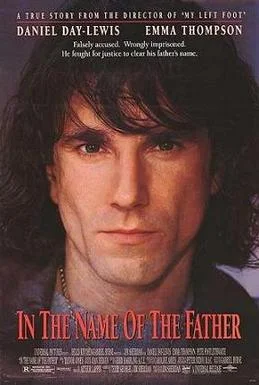
1993 · Jim Sheridan
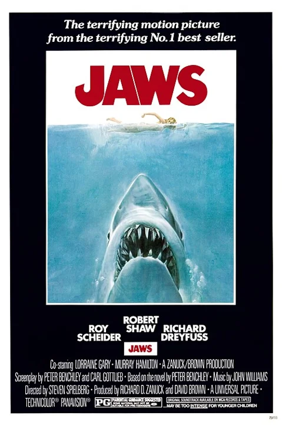
1975 · Steven Spielberg

1975 · Chantal Akerman

2003 · Quentin Tarantino
2004 · Quentin Tarantino
2017 · Greta Gerwig
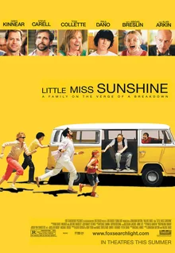
2006 · Jonathan Dayton and Valerie Faris

2003 · Sofia Coppola

1979 · Woody Allen

1993 · Woody Allen

2005 · Woody Allen
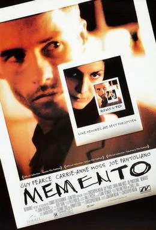
2000 · Christopher Nolan
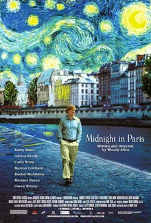
2011 · Woody Allen

2004 · Clint Eastwood
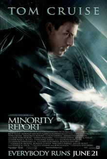
2002 · Steven Spielberg
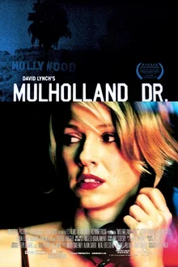
2001 · David Lynch

2003 · Clint Eastwood

1957 · Federico Fellini

1946 · Alfred Hitchcock
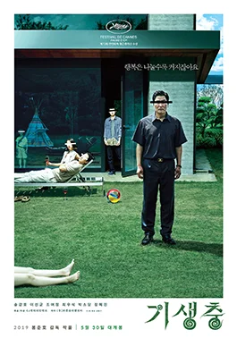
2019 · Bong Joon-ho
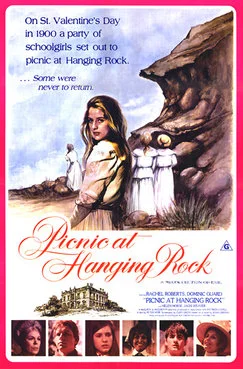
1975 · Peter Weir
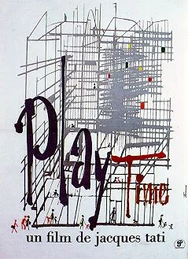
1967 · Jacques Tati
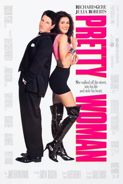
1990 · Garry Marshall

1960 · Alfred Hitchcock
1994 · Quentin Tarantino

1990 · Allan Moyle

1980 · Martin Scorsese

1981 · Steven Spielberg

1950 · Akira Kurosawa
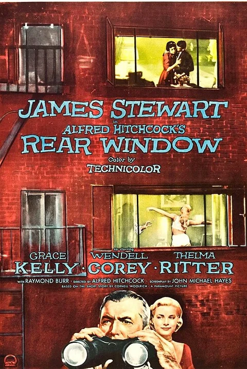
1954 · Alfred Hitchcock

1940 · Alfred Hitchcock
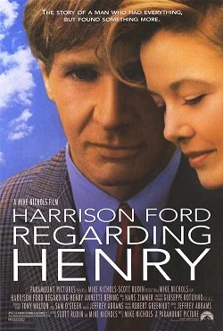
1991 · Mike Nichols

1992 · Quentin Tarantino
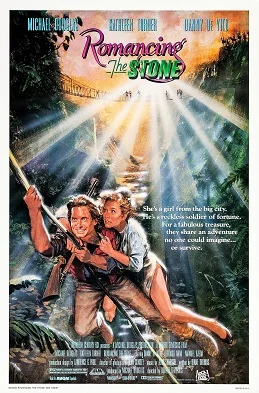
1984 · Robert Zemeckis

1998 · Wes Anderson

1998 · Steven Spielberg
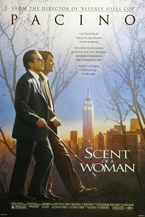
1992 · Martin Brest

1993 · Steven Spielberg
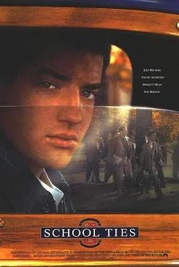
1992 · Robert Mandel
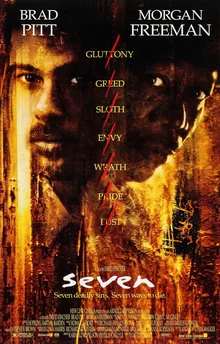
1995 · David Fincher
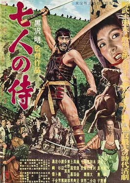
1954 · Akira Kurosawa

2004 · Alexander Payne
1991 · Joseph Ruben
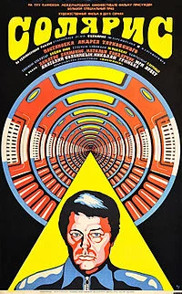
1972 · Andrei Tarkovsky
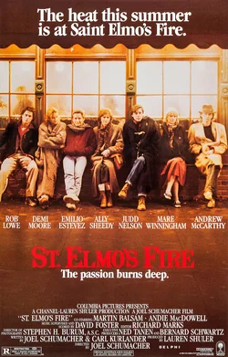
1985 · Joel Schumacher

1986 · Rob Reiner
1997 · Abbas Kiarostami

1976 · Martin Scorsese
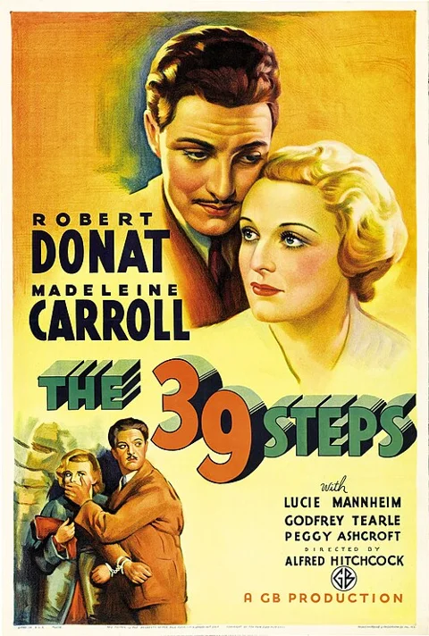
1935 · Alfred Hitchcock
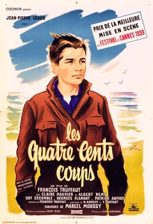
1959 · François Truffaut

1985 · John Hughes

1995 · Clint Eastwood
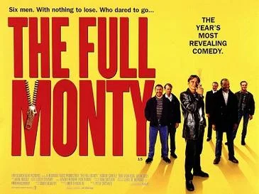
1997 · Peter Cattaneo

1972 · Francis Ford Coppola
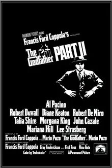
1974 · Francis Ford Coppola

1985 · Richard Donner

1938 · Alfred Hitchcock

2001 · Peter Jackson
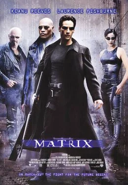
1999 · The Wachowskis

1993 · Jane Campion
1948 · Michael Powell and Emeric Pressburger

2001 · Wes Anderson

1957 · Ingmar Bergman
1994 · Frank Darabont

1980 · Stanley Kubrick
1991 · Jonathan Demme
1999 · M. Night Shyamalan
1949 · Carol Reed
1989 · Danny DeVito
1987 · Leonard Nimoy
1997 · James Cameron
1953 · Yasujiro Ozu

1985 · Agnès Varda
1958 · Alfred Hitchcock
1989 · Rob Reiner

1957 · Ingmar Bergman
1961 · Akira Kurosawa

1983 · Woody Allen
No films found. Try a different title or reset your filters.